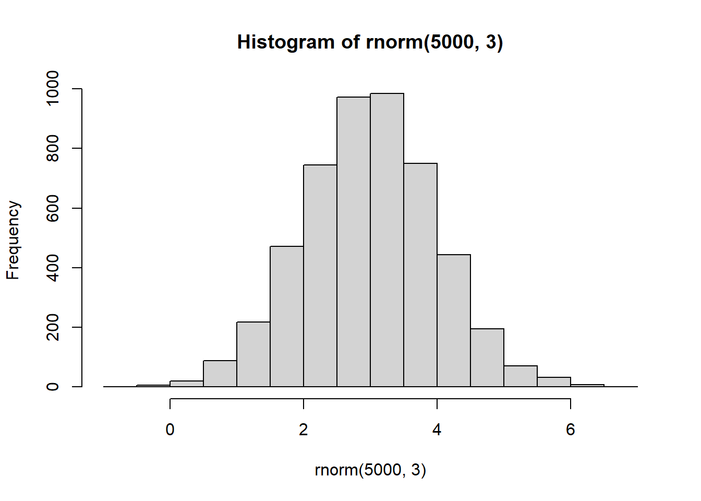
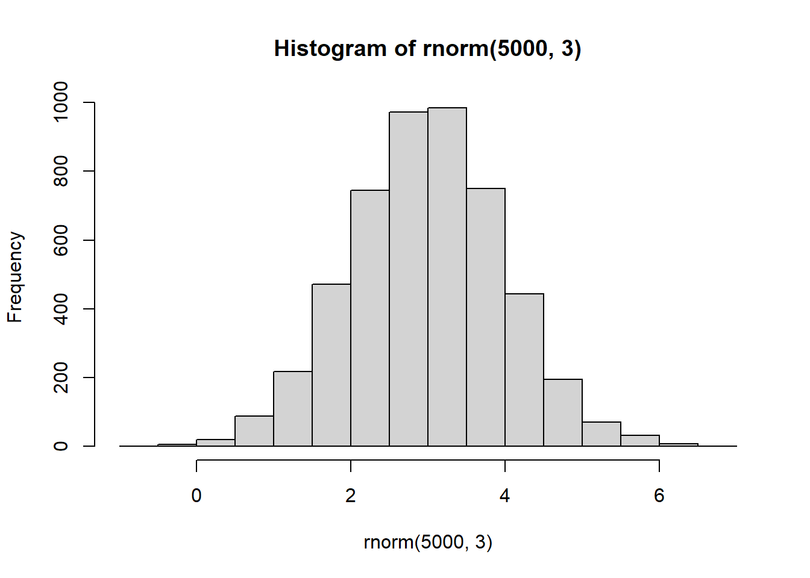
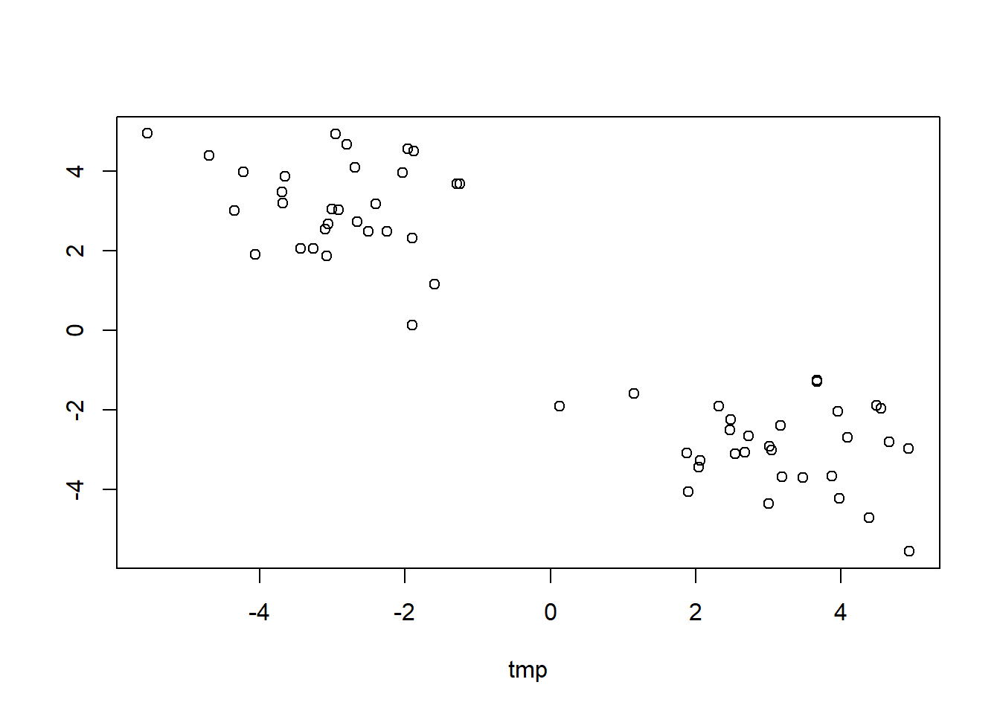
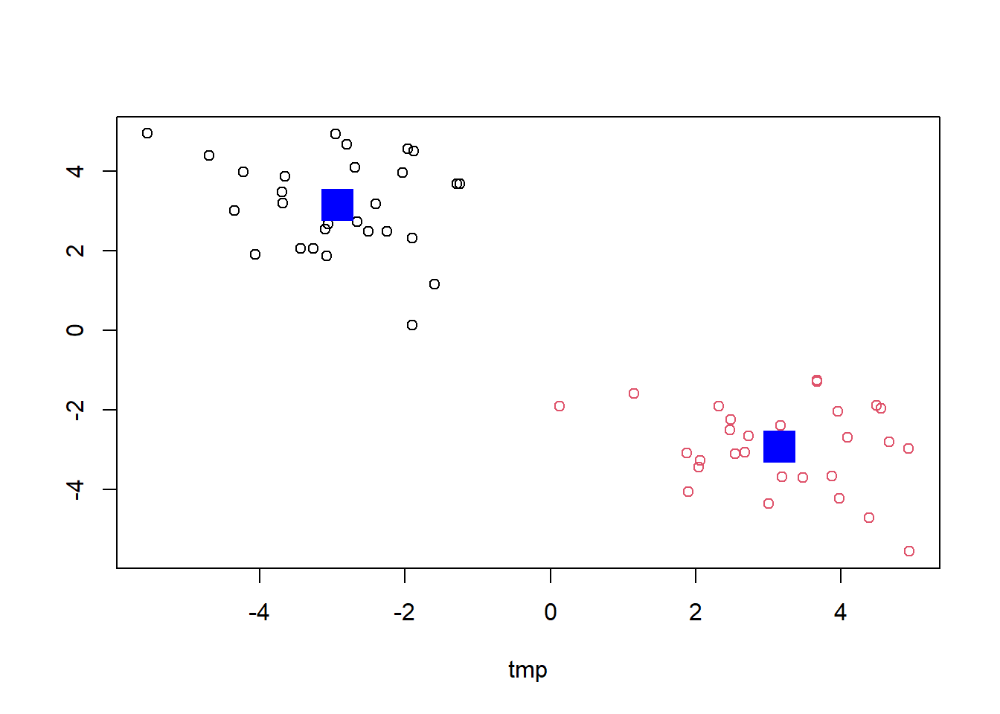
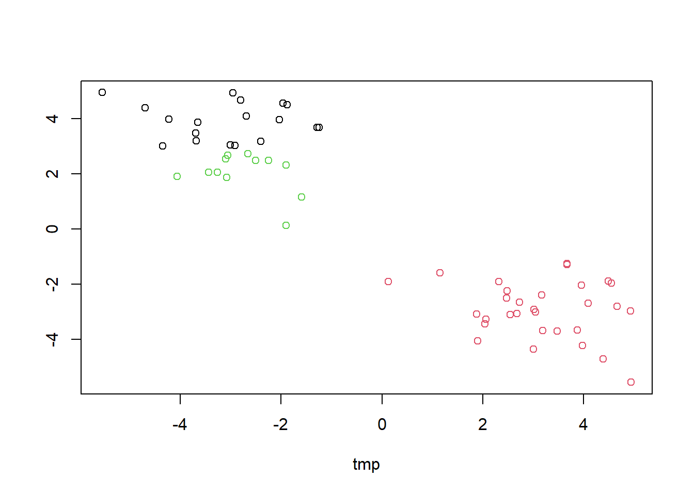
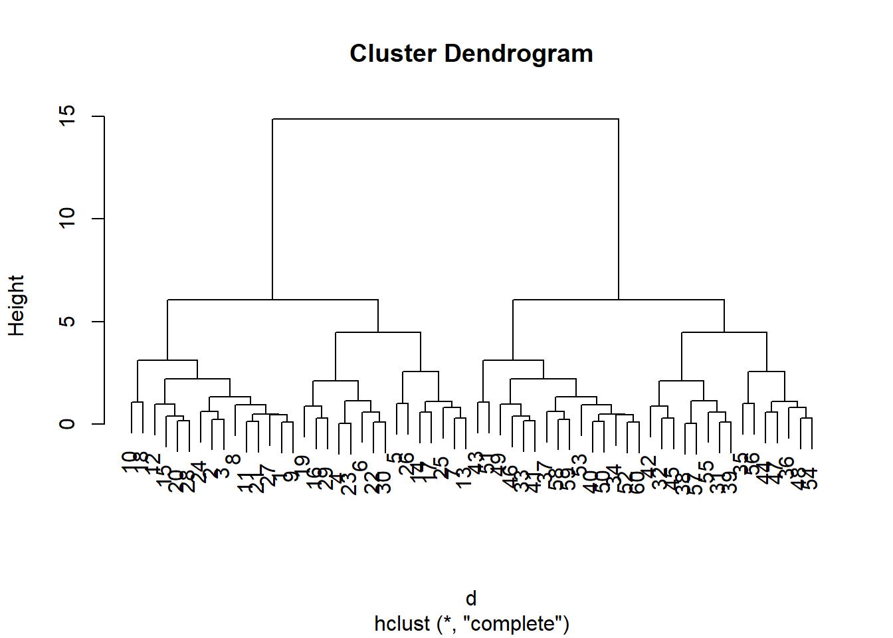
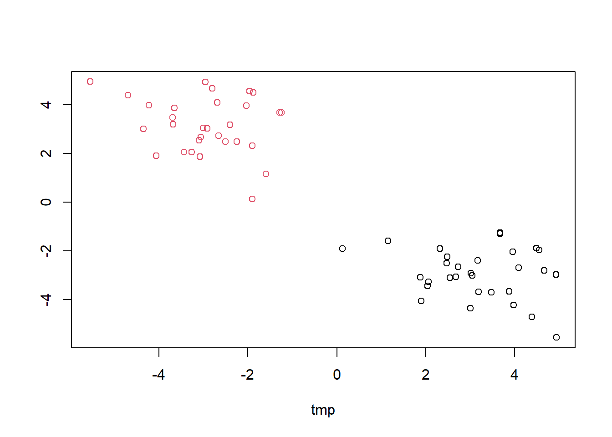
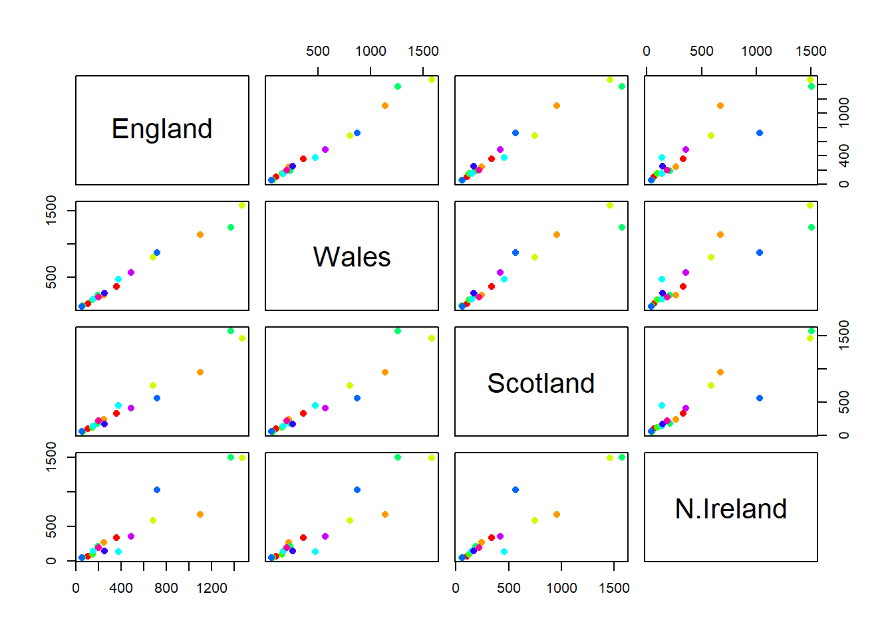
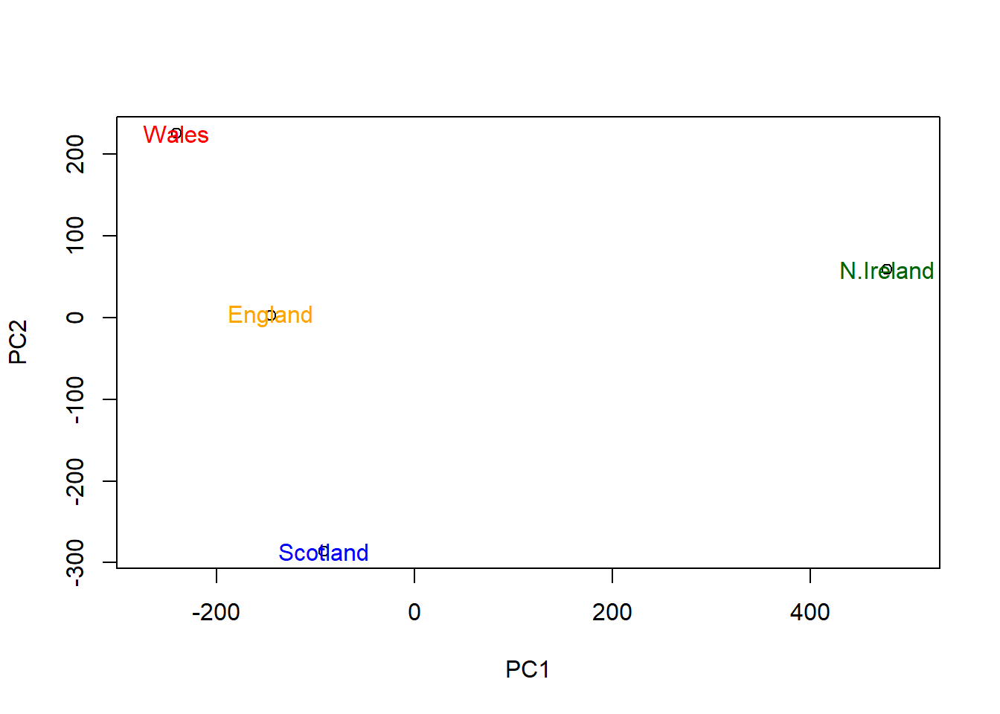

hist(rnorm(5000,3))
First let’s make up some data to cluster so we can get a feel for these methods and how to work with them.
We can use rnorm() function to get random numbers from a normal distribution around a given mean.
hist(rnorm(5000,3))
Let’s get 30 points with a mean of 3 and another 30 with a mean of -3. Then make a matrix whose plot has two clusters at two opposite corners in the Euclidean space.
tmp <- c(rnorm(30,3),rnorm(30,-3))
x <- cbind(tmp,rev(tmp))
plot(x)
Very popular clustering method, especially for big data set, that we can use with the kmeans() function in base R.
km <- kmeans(x,centers=2)
kmK-means clustering with 2 clusters of sizes 30, 30
Cluster means:
tmp
1 -2.929367 3.152003
2 3.152003 -2.929367
Clustering vector:
[1] 2 2 2 2 2 2 2 2 2 2 2 2 2 2 2 2 2 2 2 2 2 2 2 2 2 2 2 2 2 2 1 1 1 1 1 1 1 1
[39] 1 1 1 1 1 1 1 1 1 1 1 1 1 1 1 1 1 1 1 1 1 1
Within cluster sum of squares by cluster:
[1] 68.98967 68.98967
(between_SS / total_SS = 88.9 %)
Available components:
[1] "cluster" "centers" "totss" "withinss" "tot.withinss"
[6] "betweenss" "size" "iter" "ifault" How many points are in each cluster?
km$size[1] 30 30What
componentof your result object details
Cluster size?
“size”
Cluster assignment/membership?
“cluster”
Cluster center?
“centers”
Plot x colored by the kmean cluster assignment and add cluster centers as blue points
mycols <- c(1,5)
# col=km$cluster will split them into two colors
plot(x,col=km$cluster)
points(km$centers,col="blue",pch=15,cex=3)
Let’s cluster into 3 groups or same
xdata and make a plot
km <- kmeans(x,centers=3)
plot(x,col=km$cluster)
We can use the hcluster() function for Hierarchical Clustering. Unlike kmeans(), where we could just pass in our data as input, we need to give hclust() a “distance matrix”.
We will use the dist() function to start with.
d<-dist(x)
hc<-hclust(d)
hc
Call:
hclust(d = d)
Cluster method : complete
Distance : euclidean
Number of objects: 60 plot(hc)
I can now “cut” my tree with the cutree() to yield a cluster membership vector
grps <- cutree(hc, h=8)
grps [1] 1 1 1 1 1 1 1 1 1 1 1 1 1 1 1 1 1 1 1 1 1 1 1 1 1 1 1 1 1 1 2 2 2 2 2 2 2 2
[39] 2 2 2 2 2 2 2 2 2 2 2 2 2 2 2 2 2 2 2 2 2 2You can also tell cutree() to cut where it yields “k” groups
cutree(hc,k=2) [1] 1 1 1 1 1 1 1 1 1 1 1 1 1 1 1 1 1 1 1 1 1 1 1 1 1 1 1 1 1 1 2 2 2 2 2 2 2 2
[39] 2 2 2 2 2 2 2 2 2 2 2 2 2 2 2 2 2 2 2 2 2 2plot(x,col=grps)
url <- "https://tinyurl.com/UK-foods"
x <- read.csv(url, row.names = 1)
x England Wales Scotland N.Ireland
Cheese 105 103 103 66
Carcass_meat 245 227 242 267
Other_meat 685 803 750 586
Fish 147 160 122 93
Fats_and_oils 193 235 184 209
Sugars 156 175 147 139
Fresh_potatoes 720 874 566 1033
Fresh_Veg 253 265 171 143
Other_Veg 488 570 418 355
Processed_potatoes 198 203 220 187
Processed_Veg 360 365 337 334
Fresh_fruit 1102 1137 957 674
Cereals 1472 1582 1462 1494
Beverages 57 73 53 47
Soft_drinks 1374 1256 1572 1506
Alcoholic_drinks 375 475 458 135
Confectionery 54 64 62 41Q1. How many rows and columns are in your new data frame named
x? What R functions could you use to answer this questions?
## Complete the following code to find out how many rows and columns are in x?
dim(x)[1] 17 4## Preview the first 6 rows
head(x) England Wales Scotland N.Ireland
Cheese 105 103 103 66
Carcass_meat 245 227 242 267
Other_meat 685 803 750 586
Fish 147 160 122 93
Fats_and_oils 193 235 184 209
Sugars 156 175 147 139Q2. Which approach to solving the 'row-names problem' mentioned above do you prefer and why? Is one approach more robust than another under certain circumstances?
I prefer the row.names=1 approach. When you do x <- x[,-1] multiple times, it removes the columns one by one until you are left with none.
Q3: Changing what optional argument in the above barplot() function results in the following plot?
Remove beside=T argument.
barplot(as.matrix(x), col=rainbow(nrow(x)))
Q5: Generating all pairwise plots may help somewhat. Can you make sense of the following code and resulting figure? What does it mean if a given point lies on the diagonal for a given plot?
If a point lies on the diagonal for a given plot, it means the the values are very similar to one another.
pairs(x, col=rainbow(10), pch=16)
Q6. What is the main differences between N. Ireland and the other countries of the UK in terms of this data-set?
There are more wiggles in plots for country vs N. Ireland (less aligned diagonal line). The blue point is of higher value in N. Ireland compared to other countries.
Q7. Complete the code below to generate a plot of PC1 vs PC2. The second line adds text labels over the data points.
# Use the prcomp() PCA function
pca <- prcomp( t(x) )
summary(pca)Importance of components:
PC1 PC2 PC3 PC4
Standard deviation 324.1502 212.7478 73.87622 4.189e-14
Proportion of Variance 0.6744 0.2905 0.03503 0.000e+00
Cumulative Proportion 0.6744 0.9650 1.00000 1.000e+00# Plot PC1 vs PC2
plot(pca$x[,1], pca$x[,2], xlab="PC1", ylab="PC2", xlim=c(-270,500))
text(pca$x[,1], pca$x[,2], colnames(x))
Q8. Customize your plot so that the colors of the country names match the colors in our UK and Ireland map and table at start of this document.
plot(pca$x[,1], pca$x[,2], xlab="PC1", ylab="PC2", xlim=c(-270,500))
text(pca$x[,1], pca$x[,2], colnames(x),col=c("orange","red","blue","darkgreen"))